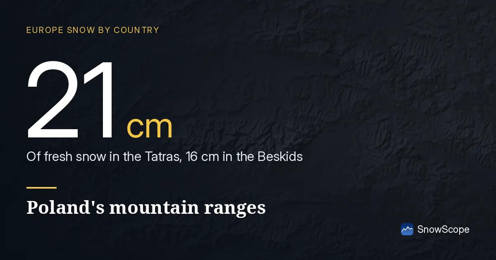
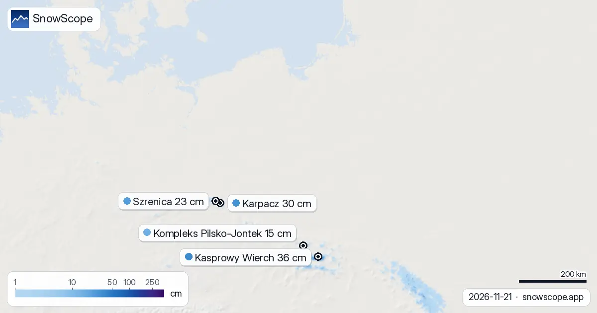
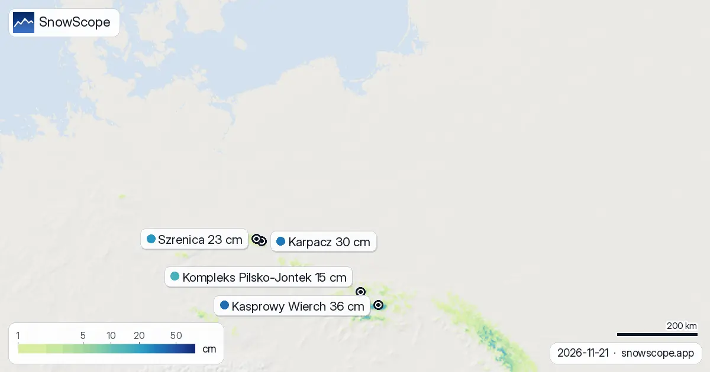

Poland's mountain ranges: 21 cm of fresh snow in the Tatras, 16 cm in the Beskids
In the past three days, Poland's mountains received between 10 and 21 cm of new snow, but the distribution was highly uneven. The Tatras captured the most moisture, while lower ranges in the south and centre collected roughly half that amount.
See the live snow forecast for Kasprowy Wierch in the SnowScope appSnow depth, powder alerts and the 3D map, free.
Where the storm delivered most snow
The Tatras stand out as the clear winner in this event, with 21 cm of new snow in 72 hours. This high mountain range on the southern border acts as a barrier that forces moist air upward and wrings out precipitation. The Beskids, further west along the same chain, received 16 cm. The Karkonosze in the north-west, though lower, still captured 15 cm.
These three ranges account for most of the fresh-snow signal across Poland. Below 1000 m elevation, almost no snow fell; the snow line sits close to that threshold today. The key difference is elevation: peaks above 1500 m are now blanketed (100% cover, mean depth 26 cm), while the foothills remain mostly bare.
| Resort | Snow depth | New snow, 72 h | Coming, next days | Top |
|---|---|---|---|---|
| Kasprowy Wierch | 36 cm | 20 cm | 10 cm | 1,958 m |
| Karpacz | 30 cm | 15 cm | 5 cm | 1,350 m |
| Szrenica | 23 cm | 13 cm | 7 cm | 1,306 m |
| Kompleks Pilsko-Jontek | 15 cm | 11 cm | 11 cm | 1,433 m |
| Borowice | 14 cm | 10 cm | 5 cm | – |

The 72-hour picture
Across the region of 11060 km2, we estimate 13 cm as the maximum new snow anywhere in Poland in the three days to 21 November. Only 290 km2 received 5 cm or more of fresh snow. This is a patchy, altitude-dependent event rather than a blanket storm.
The snow-covered area has jumped from 550 km2 yesterday to 1190 km2 today, more than doubling in a single day. However, this gain comes largely at higher elevations and masks the contrast below: at mid-mountain (1000-1500 m), mean depth is only 4 cm, and cover is 93%, meaning many slopes remain thin or rocky.

Which resorts have useful snow now
Kasprowy Wierch, at 1958 m in the Tatras, holds 36 cm after absorbing 20 cm in three days. This is the deepest snow on the Polish ski map today and the best foundation for early-season skiing. Karpacz (1350 m, Karkonosze) has 30 cm from 15 cm of new snow, also respectable for November.
Lower resorts show thinner bases: Szrenica (1306 m) has 23 cm, Kompleks Pilsko-Jontek (1433 m) has 15 cm, and Borowice sits at 14 cm. These numbers reflect both less new snow and lower starting depths. Rocks and thin patches are likely under 15–20 cm of cover, especially on south-facing slopes.
What comes next
The forecast shows a drier spell over the next three days (to 24 November), with a maximum of 10 cm possible. This is not a heavy follow-up; the mountains are unlikely to see much more fresh snow until the last week of November, when 14 cm is possible over seven days (but still concentrated at height).
In weeks two and three, the pattern offers only 7 cm per week—modest totals for mid-to-late November. Poland's mountains will need patient waiting for a substantial snow-building event.
How this compares to recent days
One week ago, 2490 km2 of Poland was snow-covered. Today, 1190 km2 is white, a loss of 1300 km2. The storm has reversed that decline slightly (we gained 640 km2 from yesterday), but the net picture over seven days is a shrinking snowpack at lower elevations. This tells us that mid-November snow has been melting faster than fresh accumulation can replace it—a typical rhythm for early season in marginal elevations.
Reading the height bands
The elevation bands reveal the structure of this event. Below 1000 m, virtually no snow persists (5% cover, 0 cm mean depth). Between 1000 and 1500 m, 93% is now covered with a thin mean of 4 cm—this is the vulnerable zone where every few degrees matter. Above 1500 m, 100% cover and 26 cm mean depth mark the reliable zone. For water managers and hydrologists, this tells us that snow-melt contributions to rivers and reservoirs will come mainly from the high ranges in the coming weeks, with the lower hills contributing little until a bigger event arrives.
Tips for skiers
- Ski above 1500 m for the best and most stable snow. Kasprowy Wierch and the highest Tatras slopes offer the thickest cover and least exposure to rocks.
- Check the aspect: north and north-east facing slopes at mid-elevations (1300–1500 m) will hold snow longer than sunny slopes, which have been warming in recent days.
- Be aware that 20–30 cm of snow in early season often harbours rocks and uneven terrain beneath. Probe or look carefully before committing to steeper terrain.
- Watch for the forecast update on 24 November; if the modelled 7 cm event shifts or strengthens, it may bring worthwhile new snow to lower resorts.
- Consult the official avalanche bulletin if you plan off-piste skiing above 1500 m, where the fresh snow sits on older, potentially unstable layers.
About these numbers
Resort snow depths are the deepest snow on the resort's upper slopes on the date shown; they are estimates for an area, not a measurement at one point. Forecasts can change. Always read the official avalanche bulletin before going off-piste.
Cite this report
For research, teaching or the press: the numbers and charts are free to reuse under CC BY 4.0 with this citation.
SnowScope (2026), Poland's mountain ranges: 21 cm of fresh snow in the Tatras, 16 cm in the Beskids, https://snowscope.app/blog/en/2026/11/poland-where-the-snow-fell-21-november-2026.html, accessed 2026-11-21
SnowScope (Atlas Labs). (2026, November 21). Poland's mountain ranges: 21 cm of fresh snow in the Tatras, 16 cm in the Beskids. SnowScope snow reports. https://snowscope.app/blog/en/2026/11/poland-where-the-snow-fell-21-november-2026.html
BibTeX
@misc{snowscope2026polandwherethesnowfell21,
author = {{SnowScope (Atlas Labs)}},
title = {Poland's mountain ranges: 21 cm of fresh snow in the Tatras, 16 cm in the Beskids},
year = {2026},
month = nov,
howpublished = {\url{https://snowscope.app/blog/en/2026/11/poland-where-the-snow-fell-21-november-2026.html}},
note = {Published 2026-11-22 10:03 UTC; accessed 2026-11-21}
}· CC BY 4.0 · Methods, data and tools →
Kasprowy Wierch: snow and temperature by height, this winter vs last (tools) →
Follow Kasprowy Wierch
Free: a message when fresh snow is coming, and the forecast every morning.
More snow reports

Up to 30 cm of snow fell on northern Velebit and Bjelolasica on Friday 13 November 2026. By Tuesday it was gone. Day by day, what the mountains kept, and when snow comes back.

Only Borovets and Bansko have a trace of snow at the top today, 2 cm each. A week ago Borovets had 11 cm. Day by day, and the one snowy day in the forecast.

From 13 to 19 November 2026 Slovenia got the most snow and kept it; Serbia and Croatia had a deep but short white weekend; Montenegro only on Durmitor; Bulgaria almost none. The ranking, with links to each country report.